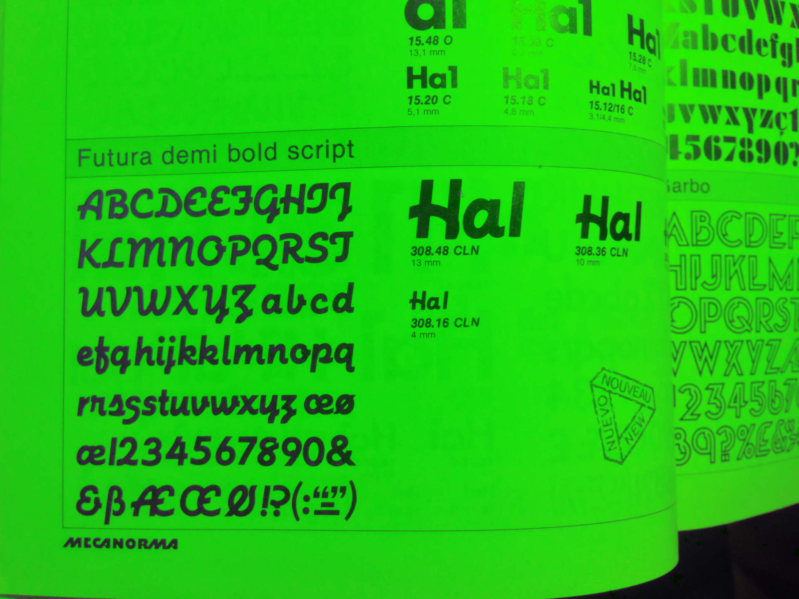
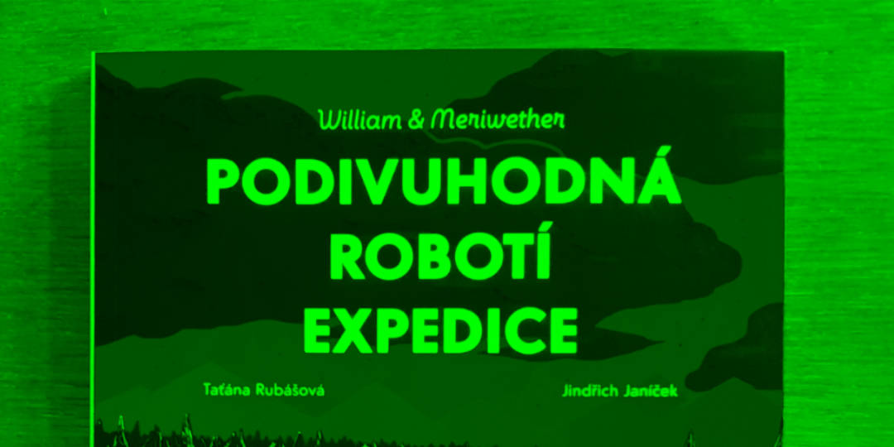

Process
I started working on Integra during my studies at UMPRUM. Redesign of the classic Futura with additional script style. This loosely related addition was originally designed much later after Renner's Futura, exactly by Edwin W. Shaar in 1954. This interesting, yet undiscovered curiosity fascinated me.

first time I saw Futura Script was when Radek Sidun sent me a picture of it. What a discovery!
The Grotesque and Oblique styles were more closely following its original model. I change mainly the archaic look that Futura has, long ascenders, sometimes weird forms and some stroke endings that were given by limitations of printing techniques back then.
I made the Script styles more related to other family members. It is offering sort of alternative italic that works

Really great illustrations together with Integra. This book having two parts uses Integra for text and Integra Script for personal information about robots that the book is about. Published by
take take take